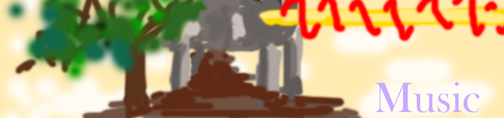

Youtube ,
SoundCloud
などに曲を投稿しています。
DAWを扱う能力は無いため、全てDominoで作成したMIDIです(DAWは使ってみたいとは思っている)。
拙いですが聞いていただけたら嬉しいです。
曲の使用改変はご自由にお願いします！
新しい曲はできるだけ頭で紹介したいのでこういうものを設けました。
|
Characteristic Characteristics. 特徴的な特徴。情緒が激しい曲です。大丈夫かい(2021/11/04)。 最後らへんが手抜き感ありますが、こういう時はどうやっても完成しないので、どうにかありつけるのです。 mp3ファイルです。 目覚める由来 ~Characteristic Characteristics.mp3 (2.78 MB, 192kbps) |
|
幼い心が一人でに遊びまわっているかのような曲を作ってみました。少し狂気が垣間見れます(2021/09/25)。 よくわからない曲です。なんか最後らへんになるとだんだん音が安心してくるので、多分昇天したのでしょうね。 mp3ファイルです。 幼き心の戯れ.mp3 (3.36 MB, 192kbps) |
|
開いた世界はさらなる世界を呼び込み広く広く広がっていくというような感覚を曲にしていきました(2021/08/18)。 久石譲氏に影響されすぎています。メロディーが否応なしに出てきてしまうんですよね。しょうがないので、そのまま作っていきました。 mp3ファイルです。 pagrotria.mp3 (2.94 MB, 192kbps) |
|
「天国は欺瞞だった。幼き天使の戯れの如く全て血溜りに還していこう。」って書いてあるんですが、そんなことないです(笑)。(2021/07/25) まあ、何かしらの天国的なイメージがあって、幼い天使がいかにも楽し気に踊り狂うっていう頭の雰囲気はあったと思います。 もっと言えば、夢幻の回廊？お呼ばれしているかのような感じなんですが、何か胡散臭さが漂う場所へ良く感じなんですかね。表現できません(汗 あと画像は先輩に作ってもらいました。そのせいか、イメージ的には幼い天使が純真な心で人を殺していく感覚が出来上がりました。 mp3ファイルです。 偽物の天国.mp3 (3.13 MB, 192kbps) |
|
クッソ陰鬱な曲が出来上がりました() (2021/06/30)。 こう、一人でいるときって、自分の存在自体が無いという感覚に陥るときがあります。 他人との対話を通して、初めて自分自身が認識出来たり、他にも何か物事を書いてみたりとかで認識出来たり…いろいろあると思いますが、個を作りたいといいつつ、個を作るためには他が必要であるという矛盾だったり… だけど結局際立ちたいのです。寂しさの中でも熱い心を爆発させたいのです。道は細いし、圧力も大きいし、認知出来ないところで何かしら利用されてたり、搾取されてたり…という風に考えたり… でも曲げられない。 mp3ファイルです。 孤独への哀歌.mp3 (3.17 MB, 192kbps) |
何もモチーフを考えずに入れたい音をふんだんに入れまくって完成した素の曲たちです。 結果もう曲じゃないというか、狂っています()
|
初めて作った曲です(2015年3月)。 最初らへんが凄く良くできたので、その後も作ってやろうって作ったら滅茶苦茶中国っぽくなりました(苦笑)。だけど中国になり切れてない。 そのことからエセチャイナと名づけられました() mp3ファイルです。 エセチャイナ.mp3 (2.32 MB, 192kbps) |
|
2016年4月に完成した曲です。 同じく最初らへんが面白かったので作っていきました。これも盛り上がりすぎて笑えてきます() 曲名は雰囲気が風っぽかったのと、ピアノが時計っぽかった(謎)ためにこうなりました。 mp3ファイルです。 Wind of Clocks!!.mp3 (3.63 MB, 192kbps) |
|
2020年10月に完成した曲です。 tinumu三部作という概念があるという知り合いの伝言から最終曲を完成させました。 雰囲気は前の2曲を踏襲しつつ、凄まじいほどの音の嵐、ﾒﾁｬｸﾁｬな情緒といった感じでなんかラスボス感が出ています(?)。 エセチャイナとWind of Clocks!!も混ぜ込んで全てが集結して一つの体系と化すみたいなイメージです。 余談ですがこの曲の没名は「エセチャイクロック・フュージョナル＝バーストストリーム！！」です。 mp3ファイルです。 Beyond the Limited World!!.mp3 (5.32 MB, 192kbps) |
ネットから拾った画像などをモチーフにして曲を作っていきます。いわゆる訓練です。
Youtubeで時々配信すると思います。
この画像で曲作ってほしい！とかあればメール(tinumu@gmail.com)お願いします。大歓迎です！
|
光陰変化(こういんへんげ)です。 葉の赤い鬱蒼とした森を天が晴らす…みたいなイメージです。 バイオリンの音をもっとハッキリさせるとか、ピアノの音の調整とか、etc..., もうちょっとやれることがあったかもですね。 この画像 がモチーフになりました(商用利用でないなら大丈夫なはず…)。 この配信で作った曲です。 mp3ファイルです。 光陰変化 ~Dark or Heavenly Red.mp3 (3.14 MB, 192kbps) |
|
「稲穂に風が吹く。今年も秋だろうか。」的な曲です。 音源を良くしたいですね。結構そのままの音源で作ろうとするとちょっと厳しめです(汗 この画像 がモチーフになりました。 この配信で作った曲です。 mp3ファイルです。 神風の吹く稲穂.mp3 (4.55 MB, 192kbps) |
|
満月によってさざめく木々などを想像して作りました。 なんかもう完全に東方風自作曲ですね。そりゃあそうか。 この画像 がモチーフになりました。 この配信で作った曲です。 mp3ファイルです。 さざめきの満月.mp3 (2.66 MB, 192kbps) |
|
「そびえ立つ山々に大地の力強さを感じる。」みたいな曲です。北海道とは何ら関係はありません()。 物量がかなりあって12時間くらいかかりました。多くてごちゃごちゃしているなぁ…って感じです。 この画像 がモチーフになりました。 mp3ファイルです。 試される大地.mp3 (3.94 MB, 192kbps) |
|
雪原地帯を思いのままに描いた…つもりです。 曲構成はうまくいきましたが、根本的な部分である、雰囲気をしっかりとつかみ取るっていうのがあまりできてなかったです。 そうなると曲作りも長くなってしまうのです。そして物量も上がっちゃう。4,5と作ってなんとなく理解してきました。 この画像 と この画像がモチーフになりました。 mp3ファイルです。 氷原 ~snowstorm.mp3 (3.59 MB, 192kbps) |
そうだ、曲を作ろう！(ヘンな曲ができる)
|
眼前に広がる美しい自然。そんな大地を走り抜けたらどんな気持ちになるだろうか(2021/03/01)。走っていくといろんな景色が見れます。結構楽しいですよ。 出来るだけ麗しいメロディーを疾走感たっぷりで奏でようと思って、こういう感じの曲に対してBPM174でやってみました。 メロディーが流れていくのですが、少し実験的だったようでもう少しやれたかも？っていう気持ちでもあります。アレンジという余地もあるのかもですね。 mp3ファイルです。 雲架かる夢の大地を駆ければ.mp3 (5.47 MB, 192kbps) |
|
朝露を消し去るような太陽の輝き。ちょっとした希望を見せてくれるような雰囲気の曲に仕上げました！ …っていうのは建前でこれも三部作と同じ、いいメロディーだったのでそのまま採用した曲です(2019年7月作)。 まあでも、雰囲気はなぜか出てますね… 勝手に猪苗代湖のイメージを浮かべています。 mp3ファイルです。 日の始まり ~Evaporated morning dew.mp3 (6.96 MB, 192kbps) |
|
記憶は甦り、その儚さをただ思い浮かべ続ける… 世界は素晴らしいみたいな曲を作ろうと思ってたのに、走馬灯のような感じの曲になってしまったので寄せました。病気ですね(笑) mp3ファイルです。 走りゆく記憶 ～ Fall away (2.50 MB, 192kbps) |
|
曲自体は2020年7月くらいには完成していましたっけ。Youtube に上げたのは 2020/12/21 のようです。 まあ、なんて頭の悪い曲を作り上げたんでしょうかね(笑 なんだけれども、別に曲的には完成されていて憎たらしい曲です。 なんかしら、感じてもらえればいいと思います。何を感じるんですかね？狂気？(笑) mp3ファイルです。 RamenHumanSausage.mp3 (5.92 MB, 181kbps) |